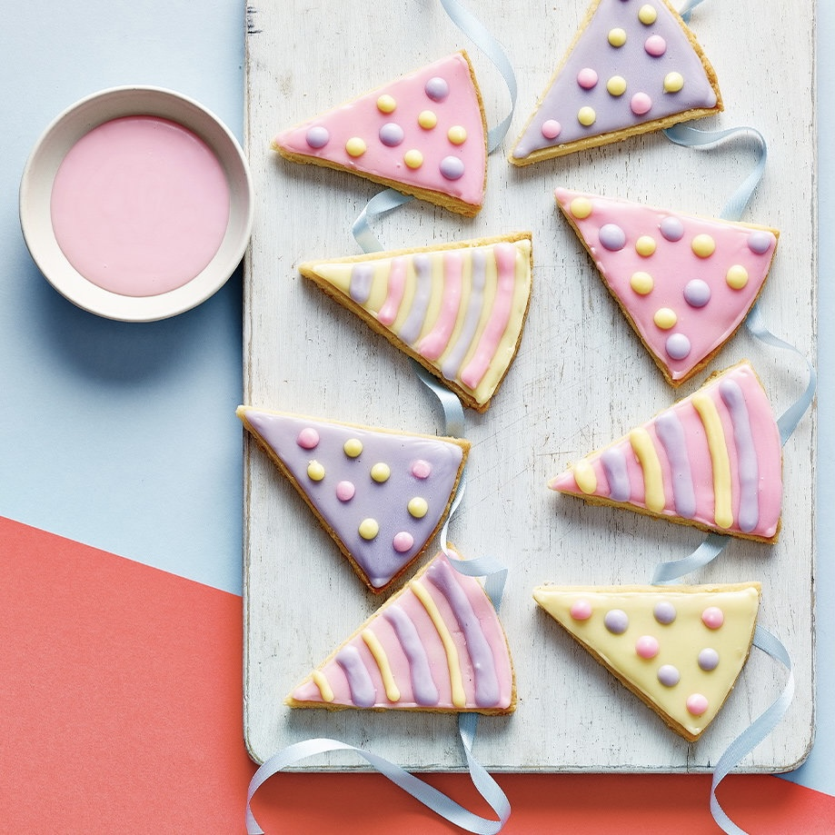

Short Bread Bunting Biscuits
RatingRate
Prep: 1 hour | Cook: 15-20mins
Makes 8
Easy
Perfect for parties, these cheerful bunting biscuits will look delightful and wow your guests
Ingredients
Method
- Put the butter and caster sugar in a mixing bowl. Beat with a wooden spoon until well combined, then beat in the vanilla extract. Stir in the flour and mix to a dough. If it’s too crumbly to roll, add a splash of water, a little at a time, until it comes together. The dough doesn’t need to be wet, but it needs to come together enough to roll out. If it’s too crumbly, it won’t roll neatly. Don’t overwork the dough, as this will make the finished biscuits tougher.
- Line a baking sheet with nonstick baking paper. Lightly dust the dough with flour, place in the centre of the sheet and roll out to an 8mm-thick, 22cm-diameter circle. Using the bottom of a 20cm cake tin or plate, cut around to remove the excess dough. Use a sharp knife to mark 8 triangle indentations, but don’t cut all the way through. Making indentations in the dough before baking makes it much easier to cut into triangles when the biscuits have cooled. Just don’t cut all the way through: about a third to halfway through will do. Chill for 30 mins. Preheat the oven to gas 5, 190°C, fan 170°C.
- Lightly prick the dough with a fork and bake for 15-20 mins until very lightly golden. Leave to cool on the baking sheet, then cut triangles using the indentations you made.
- Put the icing sugar in a mixing bowl and add the lemon juice, 1 tsp at a time, beating with a spoon until smooth. Any shapes made by mixing should disappear within 10 secs, as the icing returns to being glossy. The icing needs to be thick enough so that it doesn’t run or lose its shape when piped. Test it on a plate to make sure a drizzle from a spoon won’t go flat. You can also use royal icing sugar, which sets harder with more definition. Divide the mixture into as many bowls as you have colours, then squeeze a little colouring into each. Mix until completely combined (leave some white too, if you like).
- Fill disposable piping bags with the icing and snip the end of each one (about 3-4mm). Draw a thin outline around the edges of the biscuit with one colour, then leave for 5 mins to set. Pipe to fill with icing. Use a spoon to spread it out to the outline; repeat with the remaining biscuits. Pipe the outline about 2-3mm from the edge so it doesn’t drop off the side. Let it dry and form a skin then fill by gently pushing the icing into the corners. If there are lumps, gently tap the biscuit on the worktop until they flatten out. Leave for 10 mins. Draw dots, stripes or your own design. Use different colours to draw squiggles, stripes or polka dots. Just make sure the icing underneath has formed a skin or the designs will bleed into the background. Leave to set for 2 hrs. Will keep for up to 3 days in an airtight container.
Step 2: Pour into a large heatproof bowl or jug, and leave to cool to room temperature (you can speed this up by placing the bowl into a water bath – simply 1/4 fill the sink with cold water, add some ice and place the bowl of chocolate cream into the sink. Stir the mix regularly to speed cooling). Refrigerate until very well chilled (at least several hours or overnight). If you’re in a hurry you can pop the bowl in the freezer to speed the cooling process. Just make sure you check and stir it regularly to make sure it doesn’t actually freeze.
Step 3: Whip the chocolate cream with an electric hand mixer just until stiff peaks begin to form. It won’t take very long, be careful not to overwhip it.
Step 4: Pipe or spoon into glasses or small bowls. If it’s a little too soft to pipe, you can refrigerate the bowl of mousse again until it firms up some more, and then transfer it to a piping bag to pipe.
Step 5: Serve and enjoy!